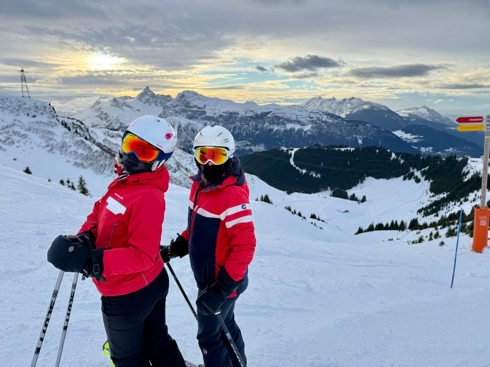

Nouveautés hiver 2026-2027 aux Carroz : remontées, luge, forfaits

À quelques semaines de l'ouverture, la station des Carroz dévoile sa feuille de route pour l'hiver 2026-2027, sous la devise « Innover pour durer » : des remontées d'occasion remises à neuf, des tarifs pensés pour les familles et de nouvelles activités qui se pratiquent aussi l'été. Voici ce qui change, et ce que cela implique pour votre séjour.
Des remontées reconditionnées pour économiser la matière
Le choix de la station est assumé : réemployer plutôt que construire neuf. Le télésiège de Gron est remplacé par un appareil débrayable six places reconditionné, venu d'une station des Pyrénées. La station annonce 30 % d'économie budgétaire et 80 à 90 % de matières premières neuves en moins. Même logique pour le télécorde du snowpark et de la « Cool Zone » de l'Oasis, racheté à la station de Valloire.
Une zone débutants gratuite à 1 500 m
Le tapis couvert des Molliets est déplacé à 1 500 m d'altitude pour créer une zone débutants entièrement gratuite, avec un enneigement plus fiable qu'au village. Bonne nouvelle pour les premiers virages des enfants, à quelques minutes du Lodge.
Les tarifs : proximité et petits budgets
- Forfait Proximité à 39 € : réservé à la clientèle régionale, du lundi au vendredi hors vacances scolaires, sur le secteur des Carroz.
- Mini-8 ans : journée gratuite pour les moins de 8 ans, et forfaits de 2 à 7 jours plafonnés à 29 € pour cette tranche d'âge, soit moins de 5 € par jour sur une semaine.
- Groupes scolaires : tarif gelé à 17 € la journée pour la troisième saison consécutive.
Pour les tarifs adultes et les dates d'ouverture station par station (Les Carroz : 12 décembre 2026 au 11 avril 2027), consultez notre article Forfaits Grand Massif 2026-2027.
Nouvelles activités, hiver comme été
- Tyrolienne double câble de 1 125 m, installée sur un layon existant sans défrichement et utilisable skis aux pieds en hiver.
- Luge scénarisée « Les Yeux de la Forêt » : 600 m de descente avec illuminations et hologrammes.
- Aquacîme : une grotte de sel rejoint le centre bien-être, idéale après une journée de ski.
Le calendrier à noter
Décembre 2026 : fêtes de fin d'année et marché de Noël (voir Noël au ski aux Carroz). Du 22 mars au 3 avril 2027 : première Altipadel Spring Edition, avec ski le matin sur le Grand Massif et stages de padel l'après-midi. Les 27 et 28 mars 2027 : retour du festival Electrosnow.
Ce que ça change pour votre séjour
Avec des enfants, la zone débutants gratuite et le dispositif Mini-8 ans allègent nettement la facture : notre guide Ski en famille aux Carroz détaille les semaines de vacances 2027. Au Lodge, le casier à skis chauffé du rez-de-chaussée et la terrasse plein sud avec bain nordique en option prolongent la journée, à 3 minutes à pied du téléphérique. Les semaines de vacances partent tôt : mieux vaut fixer vos dates dès maintenant, d'autant que les appartements avec terrasse sont les premiers réservés.
Sources : Presse Agence, « Les Carroz : hiver 2026-2027 », 29-30 septembre 2026 ; lescarroz.com. Programme susceptible d'évoluer selon l'enneigement.
Envie de séjourner au Lodge cet hiver ?
Appartement 4★ pour 6 personnes, terrasse de 45 m² et bain nordique, au centre des Carroz d'Arâches. Clémentine, notre conciergerie, s'occupe du reste.
Voir les disponibilités